|
|
Artistic Style is a source code indenter, source code formatter, and source code beautifier for the C, C++, C# programming languages. It can be used to select different styles of coding rules within CodeBlocks.
|
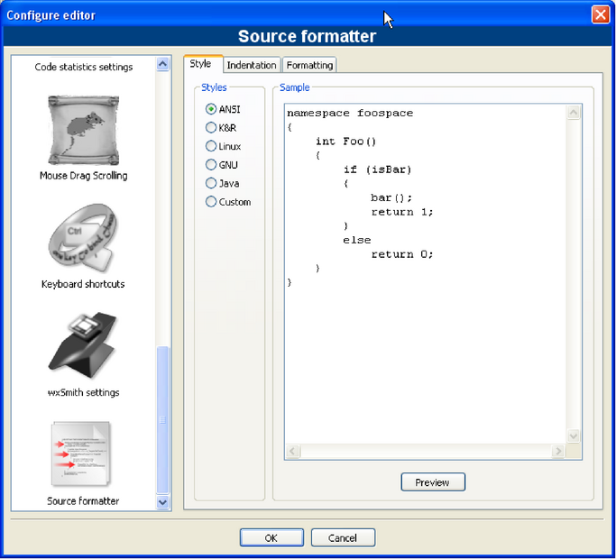
|
When indenting source code, we as programmers have a tendency to use both spaces and tab characters to create the wanted indentation. Moreover, some editors by default insert spaces instead of tabs when pressing the tab key, and other editors have the ability to prettify lines by automatically setting up the white space before the code on the line, possibly inserting spaces in a code that up to now used only tabs for indentation.
Since the number of space characters shown on screen for each tab character in the source code changes between editors, one of the standard problems programmers are facing when moving from one editor to another is that code containing both spaces and tabs that was up to now perfectly indented, suddenly becomes a mess to look at when changing to another editor. Even if you as a programmer take care to ONLY use spaces or tabs, looking at other people’s source code can still be problematic.
To address this problem, Artistic Style was created - a filter written in C++ that automatically re-indents and re-formats C / C++ / C# source files.
The CodeSnippets plug-in makes it possible to structure text modules and links to files according to categories in a tree view. The modules are used for storing often used files and constructs in text modules and managing them in a central place. Imagine the following situation: A number of frequently used source files are stored in different directories of the file system. The CodeSnippets window provides the opportunity to create categories, and below the categories, links to the required files. With these features, you can control the access to the files independently from where they are stored within the file system, and you can navigate quickly between the files without the need to search the whole system.
The list of text modules and links can be stored in the CodeSnippets window by right-clicking and selecting ’Save Index’ from the context menu. The file codesnippets.xml which will be created by this procedure, can then be found in the codeblocks subdirectory of your Documents and Settings\Application data directory. Under Linux, this information is stored in the .codeblocks subdirectory of your HOME directory. The CodeBlocks configuration files will be loaded during the next start-up. If you wish to save the content of CodeSnippets at a different location, select the ’Save Index As’ entry. To load this file, select ’Load Index File’ during the next start-up of CodeBlocks or include the directory in the ’Settings’ context menu under ’Snippet Folder’. The settings are saved in the corresponding file codesnippets.ini in your application data.
For including a category, use the ’Add SubCategory’ menu. A category can contain Snippets (text modules) or File Links. A text module is created via the ’Add Snippet’ command in the context menu. The content is integrated into the text module as ’New snippet’ by selecting the text passage in the CodeBlocks editor and dragging and dropping it onto the module and the properties dialog pops up. Double-clicking the newly included entry or selecting ’Edit Text’ will open an editor for the content.
|
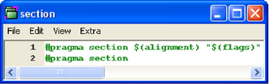
|
Output of a text module is handled in CodeBlocks via the context menu command ’Apply’ or by dragging and dropping into the editor. Under Windows, the contents of a Snippet can also be dragged and dropped into other applications. In the CodeSnippets Browser you can copy a selected item with drag and drop to a different category.
Beyond this, text modules can be parametrised by <name> variables which can be accessed via $(name) (see Editing a text module 2.2). The values of the variables can be retrieved in an entry field if the text module is called via the context menu command ’Apply’.
Besides the text modules, links to files can also be created. If, after having created a text module, you click the context menu command ’Properties’, then you can select the link target by clicking the ’Link target’ button. This procedure will automatically convert the text module into a link to a file. In CodeSnippets, all text modules will be marked by a T symbol, links to a file by an F symbol and urls by an U symbol. If you want to open a selected file (link) in the codesnippets view just select the context menu ’Open File’ or hold the ’Alt’ key and make a double click on the file.
With this setting, if open a link to a pdf file from the codesnippets view a pdf viewer will be started automatically. This method makes it possible for a user to access files which are spread over the whole network, such as cad data, layouts, documentations etc., with the common applications, simply via the link. The content of the codesnippets is stored in the file codesnippets.xml, the configuration is stored in the file codesnippets.ini in your application data directory. This ini file will, for example, contain the path of the file codesnippets.xml.
CodeBlocks supports the usage of different profiles. These profiles are called personalities. Starting CodeBlocks with the command line option --personality=<profile> will create a new or use an existing profile. Then the settings will not be stored in the file default.conf, but in <personality>.conf in your application data directory instead. The Codesnippets plugin will then store its settings in the file <personality>.codesnippets.ini. Now, if you load a new content <name.xml> in the Codesnippets settings via ’Load Index File’, this content will be stored in the corresponding ini file. The advantage of this method lies in the fact that in case of different profiles, different configurations for text modules and links can be managed.
The plug-in offers an additional search function for navigating between the categories and Snippets. The scope for searching Snippets, categories or Snippets and categories can be adjusted. By entering the required search expression, the corresponding entry is automatically selected in the view. CodeSnippets View 2.3 shows a typical display in the CodeSnippets window.
|
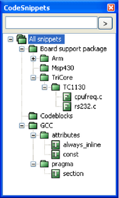
|
In complex software projects, where different users are involved, there is often the requirement of different tasks to be performed by different users. For this purpose, CodeBlocks offers a Todo List. This list can be opened via ’View’ /’To-Do list’ , and contains the tasks to be performed, together with their priorities, types and the responsible users. The list can be filtered for tasks, users and/or source files.
|
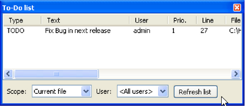
|
If the sources are opened in CodeBlocks, a Todo can be added to the list via the context menu command ’Add To-Do item’. A comment will be added in the selected line of the source code.
When adding a To-Do, a dialogue box will appear where the following settings can be made (see Dialogue for adding a ToDo 2.5).
|
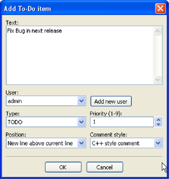
|
The necessity occurs frequently of transferring source code to other applications or to e-mails. If the text is simply copied, formatting will be lost, thus rendering the text very unclear. The CodeBlocks export function serves as a remedy for such situations. The required format for the export file can be selected via ’File’ /’Export’ . The program will then adopt the file name and target directory from the opened source file and propose these for saving the export file. The appropriate file extension in each case will be determined by the export format. The following formats are available.
Via the ’Search’ /’Thread Search’ menu, the appropriate plug-in can be shown or hidden as a tab in the Messages Console. In CodeBlocks, a preview can be displayed for the occurrence of a character string in a file, workspace or directory. In doing so, the list of search results will be displayed on the right-hand side of the ThreadSearch Console. By clicking an entry in the list, a preview is displayed on the left-hand side. By double-clicking in the list, the selected file is opened in the CodeBlocks editor.
ThreadSearch plugin offers the following features:
|
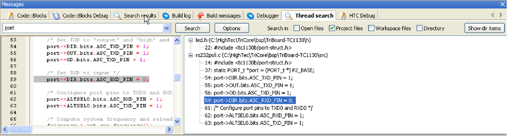
|
Once the plugin is installed, there are 4 ways to run a search:
To access ThreadSearch plugin configuration panel click on (see Configuration of Thread Search 2.7):
|
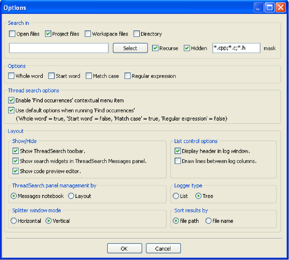
|
Search in part defines the set of files that will be analysed.
You can choose different modes how the the ThreadSearch window is managed. With the setting ’Message Notebook’ the ThreadSearch window will be a dockable window in the message panel. If you choose the setting ’Layout’ you will be able to undock the window from the message panel and put it somewhere else.
The view of the search results can be displayed in different ways. The setting ’List’ displays all occurrences as list. The other mode ’Tree’ gathers all occurrences within a file as a node.
The user can configure a horizontal or vertical splitting of the preview window and the output window of the search results.
The view of the search results may be sorted by path or file name.
The File Explorer The file manager 2.8 is included in the Shell Extensions plugin, and can be found in the ’Files’ tab. The composition of the File Explorer is shown in The file manager 2.8.
On top you will find a field for entering the path. By clicking the button at the end of this field, the drop-down field will list a history of the past entries which can be navigated via a scroll bar. The up arrow key on the right-hand side of the field moves up the directory structure one directory.
In the ’Wildcard’ field you can enter a filter term for the file display. Leaving the field empty or entering * results in all files being displayed. Entering *.c;*.h, for example will result in solely C sources and header files being displayed. Opneing the pull-down field will, again, list a history of the last entries.
|
|
Pressing the Shift key and clicking selects a group of files or directories, pressing the Ctrl key and clicking selects multiple separate files or directories.
The following operations can be started via the context menu if one or multiple directories are selected in the File Explorer:
The following operations can be started via the context menu if one or multiple files or directories are selected in the File Explorer:
The following operations can be started via the context menu if one or multiple files are selected in the File Explorer:
User-defined functions can be specified via the menu command ’Settings’ /’Environment’ /’Shell Extensions’ . In the Shell Extensions mask, a new function which can be named at random, is created via the ’New’ button. In the ’ShellCommand Executable’ field, the executable program is stated, and in the field at the bottom of the window, additional parameters can be passed to the program. By clicking the function in the context menu or the Shell Extensions menu, the function is started and will then process the selected files/directories. The output is redirected to a separate shell window.
For example a menu entry in ’Shell Extensions’ /’SVN’ and in the context menu is created for ’SVN’. $file in this context means the file selected in the File Explorer, $mpath the selected files or directories (see Variable Expansion 3.2).
This and every subsequent command will create a submenu, in this case called ’Extensions’ /’SVN’ /’Add’ . The context menu is extended accordingly. Clicking the command in the context menu will make the SVN command add process the selected files/directories.
TortoiseSVN is a widespread SVN program with integration in the explorer. The program TortoiseProc.exe of TortoiseSVN can be started in the command line and dispalys a dialogue to collect user input. So you can perform the commands, that are available as context menu in the explorer also in the command line. Therefore you can integrate it also a shell extension in CodeBlocks. For example the command
will diff a selected file in the CodeBlocks file explorer with the SVN base. See Add a shell extension to the context menu 2.9 how to integrate this command.
|
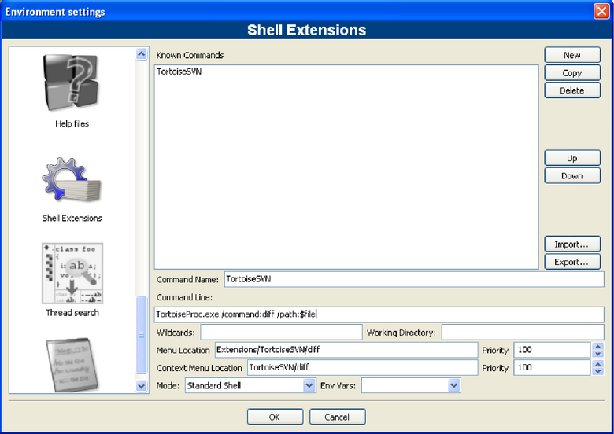
|
Example
You can use the file explorer to diff files or directories. Follow these steps:
This command will be executed using the selected files or directories as parameter. The selection is accessed via the variable $mpaths. This is an easy way to diff files or directories.
Call this executable.
Name of the file without extension.
Extension of the selected file.
Name of the file.
Name of the file without path info.
Name of the selected directory.
Name of directory without path info.
Absolute path.
Relative path of file or directory.
List of current selected files or directories.
String that is entered in a message window.
Parent directory (../).
Browse Tracker is a plug-in that helps navigating between recently opened files in CodeBlocks. The list of recent files is saved in a history. With the menu ’View’ /’Browse Tracker’ /’Clear All’ the history is cleared.
With the window ’Browsed Tabs’ you can navigate between the items of the recently opened files using the menu entry ’View’ /’Browse Tracker’ /’Backward Ed/Forward Ed’ or the shortcut Alt-Left/Alt-Right. The Browse Tracker menu is also accessible as context menu. The markers are saved in the layout file <projectName>.bmarks
A common procedure when developing software is to struggle with a set of functions which are implemented in different files. The BrowseTracks plug-in will help you solve this problem by showing you the order in which the files were selected. You can then comfortably navigate the function calls.
The plug-in allows even browse markers within each file in the CodeBlocks editor. The cursor position is memorized for every file. You can set this markers using the menu item ’View’ /’ Browse Tracker’ /’ Set BrowseMarks’ or with selecting a line with the left mouse button. A marker with † is shown in the left margin. With the menu ’View’ /’Browse Tracker’ /’Prev Mark/Next Mark’ or the shortcut Alt-up/Alt-down you can navigate through the markers within a file. If you want to navigate in a file between markers sorted by line numbers then just select the menu ’View’ /’Browse Tracker’ /’Sort BrowseMark’ .
With the ’Clear BrowseMark’ the marker in a selected line is removed. If a marker is set for a line, holding left-mouse button down for 1/4 second while pressing the Ctrl key will delete the marker for this line. Via the menu ’Clear All BrowseMarks’ or with a Ctrl-left click on any unmarked line will reset the markers within a file.
The settings of the plug-in can be configure via the menu ’View’ /’Browse Tracker’ /’Settings’ .
The configuration of the plug-in is stored in your application data directory in the file default.conf. If you use the personality feature of CodeBlocks the configuration is read from the file <personality>.conf.
If you want to use some libraries in your application, you have to configure your project to use them. Such configuration process may be hard and annoying because each library can use custom options scheme. Another problem is that configuration differs on platforms which result in incompatibility between unix and windows projects.
LibFinder provides two major functionalities:
Searching for libraries is available under ’Plugins’ /’Library finder’ menu. It’s purpose is to detect libraries installed on your system and store the results inside LibFinder’s database (note that these results are not written into CodeBlocks project files). Searching starts with dialogue where you can provide set of directories with installed libraries. LibFinder will scan them recursively so if you’re not sure you may select some generic directories. You may even enter whole disks — in such case searching process will take more time but it may detect more libraries (see List of directories 2.10).
|
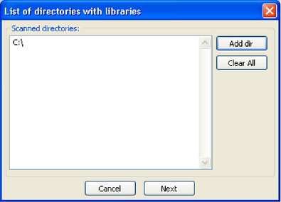
|
When LibFinder scans for libraries, it uses special rules to detect presence of library. Each set of rules is located in xml file. Currently LibFinder can search for wxWidgets 2.6/2.8, CodeBlocks SDK and GLFW — the list will be extended in future.
After completing the scan, LibFinder shows the results (see Search results 2.11).
|
|
In the list you check libraries which should be stored into LibFinder’s database. Note that each library may have more than one valid configuration and settings added ealier are more likely to be used while building projects.
Below the list you can select what to do with results of previous scans:
Another option in this dialogue is ’Set up Global Variables’ . When you check this option, LibFinder will try automatically configure Global Variables which are also used to help dealing with libraries.
If you have pkg-config installed on your system (it’s installed automatically on most linux versions) LibFinder will also provide libraries from this tool. There is no need to perform scanning for them — they are automatically loaded when CodeBlocks starts.
LibFinder adds extra tab in Project Properties ’Libraries’ — this tab shows libs used in project and libs known in LibFinder. To add library into your project, select it in right pane and click < button. To remove library from project, select it on the left pane and click > button (see Project configuration 2.12).
|
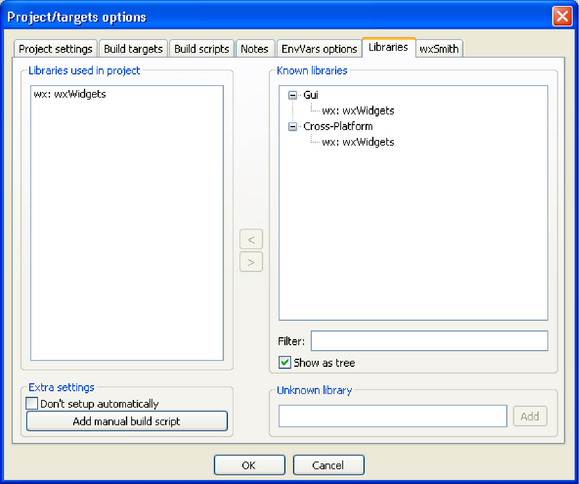
|
You can filter libraries known to LibFinder by providing search filter. The ’Show as Tree’ checkbox allows to switch between categorized and uncategorized view.
If you want to add library which is not available in LibFinder’s database, you may use ’Unknown Library’ field. Note that you should enter library’s shortcode (which usually matches global variable name) or name of library in pkg-config. List of suggested shortcodes can be found at Global Variables. Using this option is recommended only when preparing project to be built on other machines where such library exists and is properly detected by LibFinder. You can access a global variable within CodeBlocks like:
Checking the ’Don’t setup automatically’ option will notify LibFinder that it should not add libraries automatically while compiling this project. In such case, LibFinder can be invoked from build script. Example of such script is generated and added to project by pressing ’Add manual build script’ .
Wizards will create projects that don’t use LibFinder. To integrate them with this plugin, you will have to manually update project build options. This can be easily achieved by removing all library-specific settings and adding library through ’Libraries’ tab in project properties.
Such project becomes cross-platform. As long as used libs are defined in LibFinder’s database, project’s build options will be automatically updated to match platform-specific library settings.
An application versioning plug in that increments the version and build number of your application every time a change has been made and stores it in version.h with easy to use variable declarations. Also have a feature for committing changes a la SVN style, a version scheme editor, a change log generator and more †
The idea of the AutoVersioning plugin was made during the development of a pre-alpha software that required the version info and status. Been to busy coding, without time to maintain the version number, just decided to develop a plugin that could do the job with little intervention as possible.
Here is the list of features the plugin covers summarized:
Just go to ’Project’ /’Autoversioning’ menu. A pop up window like this will appear:
|
|
When hitting yes on the ask to configure message box, the main auto versioning configuration dialog will open, to let you configure the version info of your project.
After configuring your project for auto versioning, the settings that you entered on the configuration dialog will be stored on the project file, and a version.h file will be created. For now, every time that you hit the ’Project’ /’Autoversioning’ menu the configuration dialog will popup to let you edit your project version and versioning related settings, unless you don’t save the new changes made by the plugin to the project file.
Here you just enter the corresponding version values or let the auto versioning plugin increment them for you (see Set Version Values 2.14).
|
|
Some fields to keep track of your software status with a list of predefined values for convenience(see Set Status of Autoversioning 2.15).
|
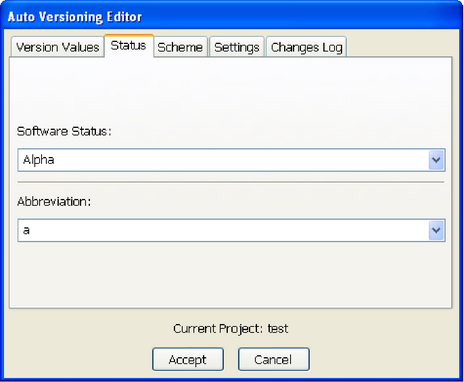
|
Lets you edit how the plugin will increment the version values (see Scheme of autoversioning 2.16).
|
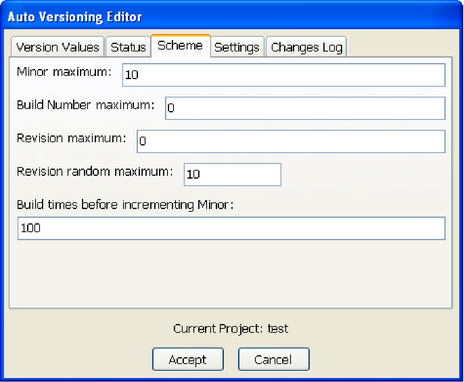
|
Here you can set some settings of the auto versioning behavior (see Settings of Autoversioning 2.17).
|
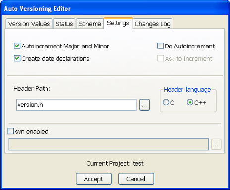
|
This lets you enter every change made to the project to generate a ChangesLog.txt file (see Changelog of Autoversioning 2.18).
|
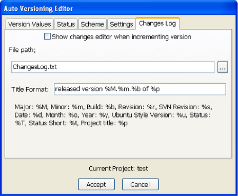
|
To use the variables generated by the plugin just #include <version.h>. An example code would be like the following:
The generated header file. Here is a sample content of the file on c++ mode:
On C mode is the same as C++ but without the namespace:
This dialog is accessible from the menu ’Project’ /’Changes Log’ . Also if checked Show changes editor when incrementing version on the changes log settings, the window will open to let you enter the list of changes after a modification to the project sources or an incrementation event (see Changes for a project 2.19).
|
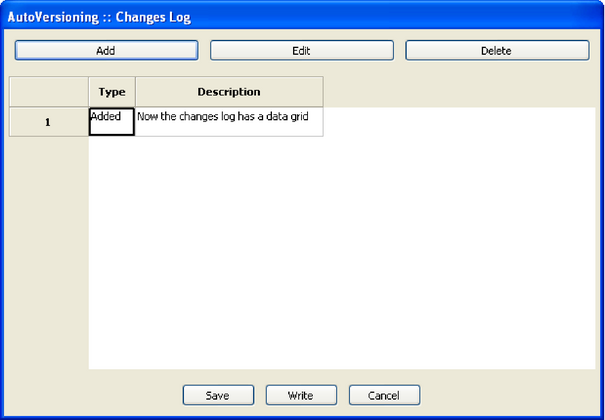
|
Here is an example of the output generated by the plugin to the ChangesLog.txt file:
|
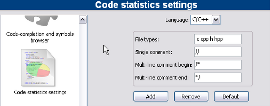
|
Based on the entries in the configuration mask, this simple plugin detects the proportions of code, commentaries and blank lines for a project. The evaluation is called via the menu command ’Plugins’ /’Code statistics’ .
This plugin makes it possible to select a term within the editor and to search for this term via the context menu ’Search at Koders’ in the [?] database. The dialogue offers the additional possibilities to of filtering for program languages and licences.
This database search will help you find source code originating from other world-wide projects of universities, consortiums and organisations such as Apache, Mozilla, Novell Forge, SourceForge and many others, which can be re-used without having to reinvent the wheel every time. Please observe the licence of the source code in each individual case.
A simple graphical interface to the GNU GProf Profiler.
This plugin makes it possible to search for symbols in objects and libraries. The options and the path for the command line program nm are defined in the Options tab.
|
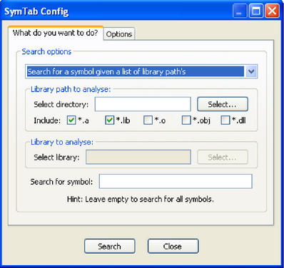
|
Clicking the ’Search’ stats the search, the results of the NM program are displayed in a separate window caleld ’SymTabs Result’. The name of the objects or libraries containing the symbol are listed under the title ’NM’s Output’.